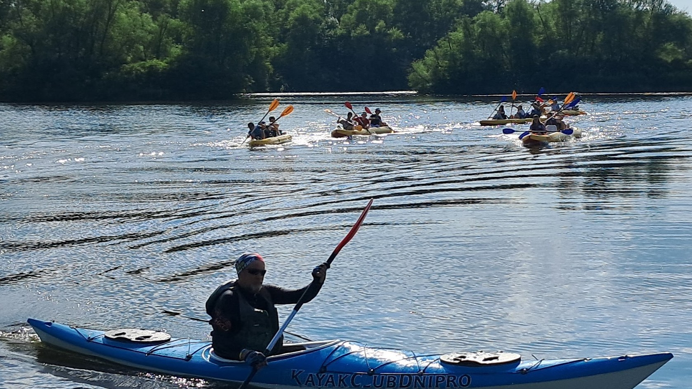
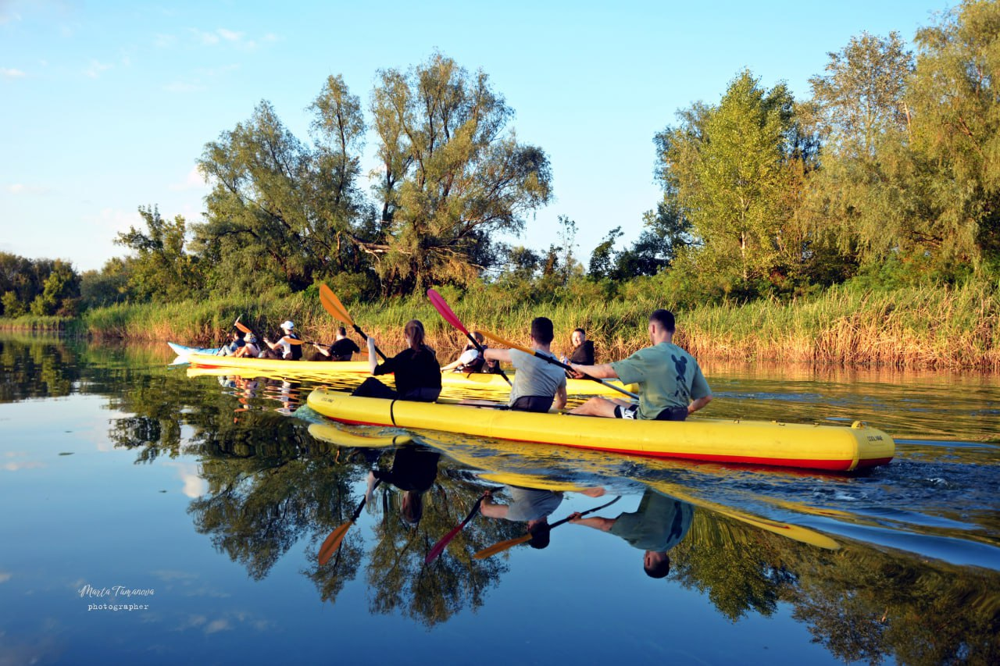
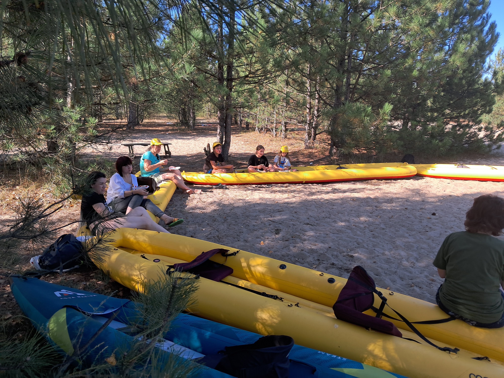
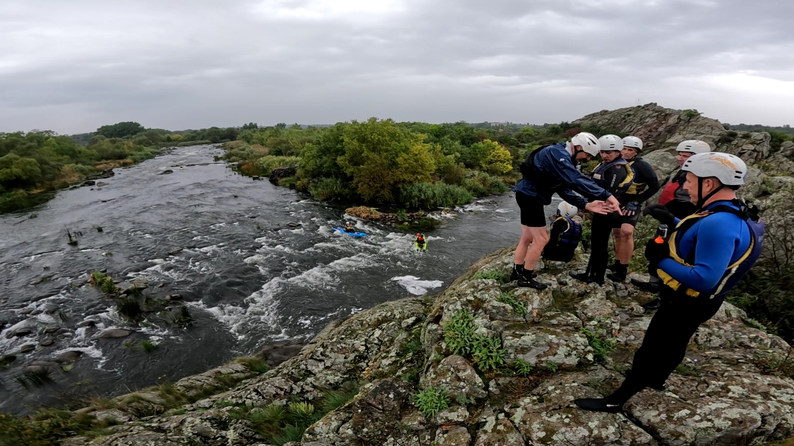
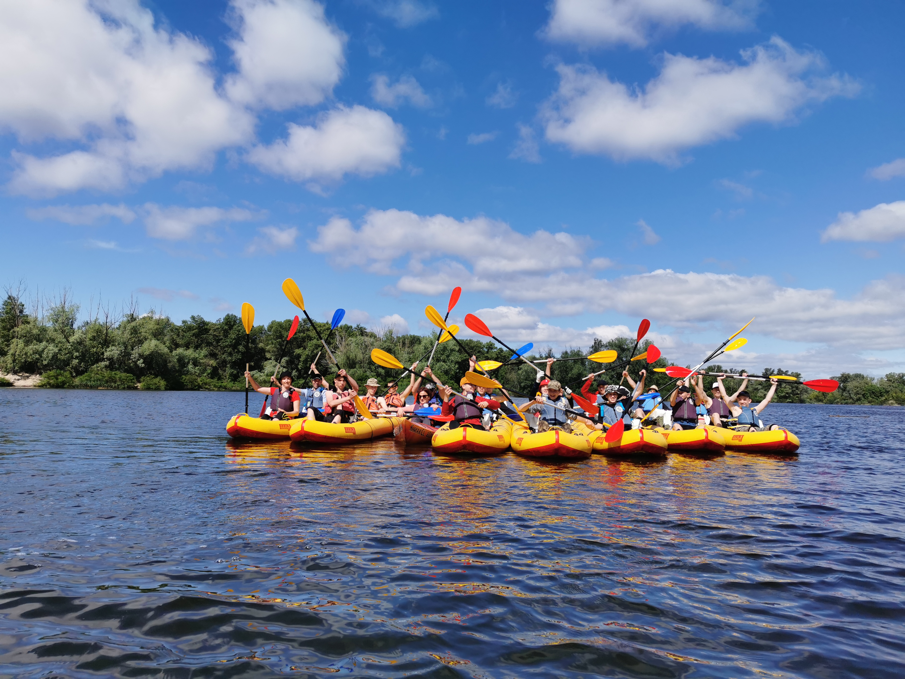
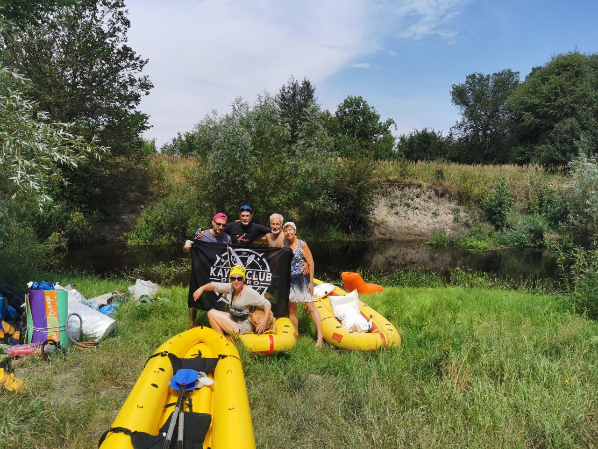

- Екскурсії водним парком
(2 години) -  Докладніше
- Сплави з ночівлею річками з помірною
течією: Оріль, Ворскла, Сура,Самара,
Дністер. Тривалістю від 2 до 8 днів. - 
Докладніше
- Походи вихідного дня на острів
тривалістю від 6 до 9 годин -  Докладніше
- Рафтинг - сплав по бурхливій/білій воді.
Виїздний заход на Пувденний буг.
На три ночівлі - 
Докладніше
Для початківців у веслуванні та керуванні плавзасобом радимо почати з двогодинної екскурсії водним парком, де ви зможете не тільки вперше навчитесь веслувати, але й зробити гарні світлини/відео на згадку про пригоди.
Цей формат відпочинку на воді радимо новачкам, які ніколи не керували плавзасобом. Екскурсії відбувається на надувних байдарках, які не перевертаються на воді.
Усі організовані заходи пов’язані з відпочинком на воді анонсуємо в соцмережах.
Підписуйтесь, щоб вчасно отримувати тематичні пропозиції від Kayak Club Dnipro
Двогодинні екскурсії на воді в супроводі гіда-інструктора
- Ранкові двогодинні екскурсії
водним парком 
- Вечірні двогодинні екскурсії
водним парком 
Увага! Графік, локації, вартість, пільги, групові замовлення - звертайтесь до адміністратора.
ПОХІД ВИХІДНОГО ДНЯ
Саме такий формат відпочинку частіше замовляють компанії для святкування корпоративних заходів, сімейних традицій, шкільних випускних і таке інше
Із задоволенням, кожні вихідні робимо відпочинок на цілий день з кейтерінгом. Тривалість такого формату відпочинку від 6 до 9 годин.
Сценарій складається з екскурсії водним парком (тривалістю 2-2,5 години), відпочинок на острові з чаюванням, смаколиками та смачним обідом на багатті. Організацію столу на себе також беремо ми.
Під час відпочинку на острові, купаємось, граємо в бадмінтон, фрізі, проводимо інтелектуальні ігри.
Сплав та повернення відбувається в одній локації.
Такий формат відпочинку забезпечує потребу у перезавантаженні та відновленні особистих ресурсів.
УВАГА!Якщо склад вашої компанії 9 дорослих людей і більше, можливо зробити індивідуальний похід та обрати будь який день тижня.
Подзвоніть/напишіть адміністратору для узгодження усіх організаційних питань: +380966748338
- Світлини з ПВД
- 
- Відео з ПВД
Сплави по річках з помірною течією
Пропонуємо сплави по річках Оріль, Ворскла, Сура, Самара, Дністер та іншим.
Організовуємо трансфер з точки старту до фіналу.
Відстань сплавів залежить від тривалості (15-35 км).
Досвід веслування здобувається під час подорожі під наглядом інструктора.
Веслувати по помірній течії не складно, достатньо опанувати байдарку та функції кожного учасника.
Надаємо все необхідне для комфортного відпочинку: намети, спальні мішки, каремати, посуд.
Вам лише потрібно подбати про особисті речі та засоби гігієни.
- світлини з Орілі
- 
- Відео з Орілі
Більш екстремальні формати відпочинку на воді це рафтинг на бурхливій воді. Таку воду називають білою, бо на воді утворюється піна.
Перевірений формат відпочинку особисто засновником Kayak Club Dnipro та інструкторами.
Відпочинок цілком відповідає меті - повне перезавантаження.
Такий формат підходить сім’ям з активною життєвою позицією. За межами віртуального простору. З дітьми можна і потрібно! Досвідчені, перевірені часом і діями інструктори беруть відповідальність на себе за кожного в команді. Особисто з нами сплавлялись діти 5-6 років. Проходила пороги і наша улюблена собака Аліска (дивіться на світлинах).
Рафтинг відбувається на річці Південний буг. Зазвичай це три порога, які підкоряються за декілька разів на різноманітних плавзасобах: великий рафт на 4-12 осіб, тримісні, двомісні байдарки або одномісні пакрафти, байдарки.
Для просунутих користувачів, які з водною стихією “на ти” є в наявності спеціалізовані каяки для сплавів.
Від м. Дніпро відстань далеченька (біля 400 км), тому ми пропонуємо виділити на цей відпочинок 4 повних дні.
На локації, в кемпінгу ночівля в наметах на 3 ночі. Триразове якісне харчування, душ, нескінченна кількість чаю-кави, три вечора спілкування, пісень, музики біля великого багаття.
Зацікавлені? Дзвоніть за номером: +380966748338 почнемо вирішувати організаційні питання.
Вгору